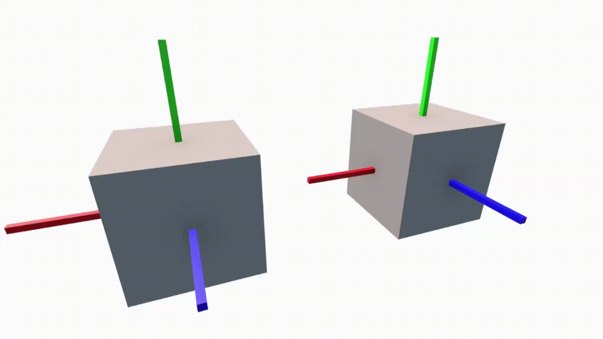

Model matrix
Model matrix là một trong 3 thành phần tạo nên Model View Projection matrix, model matrix tập hợp tất cả các biến đổi liên quan tới mọi vật thể trong không gian 3D, những biến đổi này là dịch chuyển, xoay và phóng to/nhỏ. Nếu bạn nhớ, thì hồi lớp 11 bạn có học về Phép biến hình, trong đó có phép tịnh tiến, phép xoay và phép vị tự, đó chính là 3 phép biến đổi mà mình vừa nói 😳.Đầu tiên là phép dịch chuyển, được gọi là Translation matrix, sau khi nhân một vector (điểm) \(v\) với nó thì \(v\) sẽ được di chuyển theo một hướng nào đó, gọi vector đại diện hướng đó là \(t\), ta cần tìm ma trận có thể làm được điều sau: $$ A* \begin{pmatrix} x \\ y \\ z \\ 1 \end{pmatrix} = \begin{pmatrix} x + t_{x}\\ y + t_{y}\\ z + t_{z}\\ 1 \end{pmatrix} $$ Ta để ý là cả 3 chiều của \(t\) đều có dạng biến nhân gì đó cộng gì đó, như vậy ở mỗi hàng của ma trận ta chỉ cần để số 1 ở chỗ biến cần giữ, và để chiều tương tự của \(t\) ở cột thứ 4 (\(w\)) là sẽ ra lại được \(t\). Như vậy ma trận của chúng ta sẽ có dạng: $$ \begin{pmatrix} 1 & 0 & 0 & t_{x}\\ 0 & 1 & 0 & t_{y}\\ 0 & 0 & 1 & t_{z}\\ 0 & 0 & 0 & 1 \end{pmatrix} $$ Tiếp theo ta sẽ nói về phép phóng to/nhỏ, gọi vector đại diện cho giá trị ta muốn scale ở 3 chiều là \(s\), ta cần một ma trận có thể làm được điều sau: $$ A * \begin{pmatrix} x \\ y \\ z \\ 1 \end{pmatrix} = \begin{pmatrix} x * s_{x}\\ y * s_{y}\\ z * s_{z}\\ 1 \end{pmatrix} $$ Như vậy thì càng dễ, mỗi hàng của ma trận ta chỉ cần để chiều tương ứng của \(s\) vào chiều của \(v\) là ra: $$ \begin{pmatrix} s_{x} & 0 & 0 & 0\\ 0 & s_{y} & 0 & 0\\ 0 & 0 & s_{z} & 0\\ 0 & 0 & 0 & 1 \end{pmatrix} $$ Cuối cùng đến với phép xoay, là Rotation Matrix, cái này sẽ hơi khó tí. Cho nên ta hãy nói về nó ở 2D trước, ta muốn xoay một vector \(v\) một góc (\(θ\)) xung quanh gốc tọa độ (0; 0) thành vector \(v'\) (lưu ý là xoay ngược chiều kim đồng hồ). Để cho đúng Đại số tuyến tính (và cũng để dễ tính), ta sẽ vẽ luôn trục x, y sau khi xoay xong, cái này người ta gọi là chuyển hệ quy chiếu, hay chuyển cơ sở sao đó mình cũng quên rồi. Mình tô màu hệ quy chiếu của \(v\) là màu đen và hệ quy chiếu của \(v'\) là đỏ để cho bạn dễ nhìn.


Lấy \(\vec{v_{x}}\) trên hệ quy chiếu đỏ chiếu lên trục \(y\) của hệ quy chiếu đen, gọi độ dài hình chiếu đó là \(C\), lấy \(\vec{v_{y}}\) trên hệ quy chiếu đỏ chiếu lên trục \(y\) của hệ quy chiếu đen, gọi độ dài hình chiếu đó là \(D\). Ta thấy \(|\vec{v'_{y}}| = C + D\), và \(C = |v_x|\sin{θ}, D=|v_y|\cos{θ}\), suy ra \(|\vec{v'_{y}}| = |v_x|\sin{θ} + |v_y|\cos{θ}\).
Mình khuyến khích bạn nên làm thử lại từ hình ban đầu để thật sự hiểu và nhớ, hình trên vẽ hết các đường nét đứt và đánh dấu các góc bằng nhau nên bạn nhìn ra rất dễ. Bây giờ mình sẽ chuyển nó thành ma trận, mình cần một ma trận \(A\) làm được điều như sau: $$ A * \begin{pmatrix} v_x \\ v_y \\ \end{pmatrix} = \begin{pmatrix} |v_x|\cos{θ} - |v_y|\sin{θ} \\ |v_x|\sin{θ} + |v_y|\cos{θ} \\ \end{pmatrix} $$ Nó đúng luôn dạng nhân từng ô trên 1 hàng và cộng lại với nhau, nên ta suy ra được luôn ma trận: $$ \begin{pmatrix} cos{θ} & -sin{θ} \\ \sin{θ} & \cos{θ} \\ \end{pmatrix} $$ Bây giờ ta sẽ chuyển nó qua 3D, thay vì làm hết tất cả 3 chiều, ta sẽ làm từng chiều một. Đầu tiên là khi ta muốn xoay 1 điểm quanh trục \(y\), ta suy nghĩ sẽ thấy là \(y\) của điểm đó sẽ giữ nguyên, và \(x\), \(z\) sẽ thay đổi như cách xoay 2 chiều bình thường. Cho nên khi ta xây ma trận, với hàng 2 ta sẽ để số 1 ở cột 2 để giữ lại x, hàng 1 và 3 ta sẽ để cột 2 là 0 và cột 1, 3 sẽ như ma trận cho 2D ở trên. $$ \begin{pmatrix} cos{θ} & 0 & -sin{θ}\\ 0 & 1 & 0 \\ \sin{θ} & 0 & \cos{θ} \\ \end{pmatrix}; $$ Đối với \(x\) và \(z\), vì mình chọn hệ tọa độ tay trái (left-handed coordinate) như đã nói ở blog 2, đối với trục x, bạn tưởng tượng nhìn thẳng vào trục x (trục x hướng vào mắt mình), thì bạn sẽ thấy y hướng lên và z hướng qua phải, như vậy là ngược với cái chứng minh 2D của chúng ta (z có thứ tự sau y, cũng như y có thứ tự sau x), lúc quay sẽ bị ngược, cho nên ta đổi dấu \(\theta\), cũng đồng nghĩa với đổi dấu \(\sin\theta\) và giữ nguyên \(cos\theta\). Tương tự với trục z, nhìn thẳng vào trục z ta thấy y hướng lên và x hướng qua trái, cũng ngược, cho nên cũng phải đổi dấu. Suy ra ma trận xoay của x và z là: $$ \begin{pmatrix} 1 & 0 & 0\\ 0 & cos{θ} & sin{θ} \\ 0 & -\sin{θ} & \cos{θ} \\ \end{pmatrix} \begin{pmatrix} cos{θ} & sin{θ} & 0\\ -\sin{θ} & \cos{θ} & 0 \\ 0 & 0 & 1 \\ \end{pmatrix} $$ Ta có thể gộp 3 ma trận này với nhau thành một ma trận duy nhất, tuy nhiên ta không nên làm vậy vì sẽ ra một ma trận khá rối (\(θ\) ở 3 ma trận đều khác nhau), với lại thứ tự mà ta nhân 3 ma trận này với nhau cũng quan trọng, \(XYZ \neq ZYX\) (nếu bạn không biết, ma trận không có tính chất giao hoán).
Ngoài ra có một thứ khác mà bạn cần biết, trước hết 3 ma trận này đều quay theo trục thế giới (hệ quy chiếu đen), nhưng mà nếu bạn muốn xoay theo trục cục bộ của cube (hệ quy chiếu đỏ) thì sao? Nghĩa là sau khi bạn quay xong theo trục \(x\), bạn sẽ quay tiếp theo trục \(y\) mới của cube chứ không quay theo \(y\) thế giới nữa, nó gọi là intrinsic rotation, còn quay theo trục thế giới thì được gọi là extrinsic rotation.
Để quay được theo intrinsic rotation, bạn nên biết một định lý là: Xoay \(x \rightarrow y \rightarrow z\) thế giới sẽ ra kết quả giống hệt xoay \(z \rightarrow y \rightarrow x\) cục bộ (và ngược lại cũng đúng). Về bản chất toán học mình sẽ không nói tới vì mình không giỏi toán chứng minh cũng như Đại số tuyến tính 😅, bạn có thể xem gif dưới đây mà mình làm trong Unity để hình dung rõ hơn:

Toán đã đủ, bây giờ là code time 😳 Đầu tiên ta tạo những hàm xây dựng các ma trận mà ta đã tìm ra, để hết trong class Mat4x4. Lưu ý là đối với 3 cái rotation
matrix nó vẫn là ma trận 4 chiều, để dòng 4 cột 4 là 1 để giữ nguyên \(w\) là được:
class Mat4x4 {
...
static Translation(x, y, z) {
let matrix = new Mat4x4();
matrix.m[0][0] = 1;
matrix.m[1][1] = 1;
matrix.m[2][2] = 1;
matrix.m[3][3] = 1;
matrix.m[0][3] = x;
matrix.m[1][3] = y;
matrix.m[2][3] = z;
return matrix;
}
static Scale(x, y, z) {
let matrix = new Mat4x4();
matrix.m[0][0] = x;
matrix.m[1][1] = y;
matrix.m[2][2] = z;
matrix.m[3][3] = 1;
return matrix;
}
static RotationX(angle) {
let radian = angle / 180.0 * Math.PI;
let matrix = new Mat4x4();
matrix.m[0][0] = 1;
matrix.m[1][1] = Math.cos(radian);
matrix.m[1][2] = -Math.sin(radian);
matrix.m[2][1] = Math.sin(radian);
matrix.m[2][2] = Math.cos(radian);
matrix.m[3][3] = 1;
return matrix;
}
static RotationY(angle) {
let radian = angle / 180.0 * Math.PI;
let matrix = new Mat4x4();
matrix.m[0][0] = Math.cos(radian);
matrix.m[0][2] = -Math.sin(radian);
matrix.m[1][1] = 1;
matrix.m[2][0] = Math.sin(radian);
matrix.m[2][2] = Math.cos(radian);
matrix.m[3][3] = 1;
return matrix;
}
static RotationZ(angle) {
let radian = angle / 180.0 * Math.PI;
let matrix = new Mat4x4();
matrix.m[0][0] = Math.cos(radian);
matrix.m[0][1] = -Math.sin(radian);
matrix.m[1][0] = Math.sin(radian);
matrix.m[1][1] = Math.cos(radian);
matrix.m[2][2] = 1;
matrix.m[3][3] = 1;
return matrix;
}
}Tiếp theo, mình sẽ tạo một Cube để đại diện cho một khối lập phương có đầy đủ đặc tính vị trí, độ xoay và tỉ lệ trong không gian, mình sẽ chuyển hàm makeCube vào trong class này, đổi tên thành generateInitialTriangles (các tam giác của cube trước khi được biến đổi bởi Model matrix). Ngoài ra tạo thêm một hàm getTransformedTriangles để trả về những tam giác đó sau khi bị biến đổi. Lí do mình không thay đổi trực tiếp trên mấy tam giác đó luôn mà phải clone ra biến đổi rồi trả về là vì mình luôn phải giữ trạng thái ban đầu của chúng, như trên mình nói thì mình muốn thay đổi gì chỉ thay đổi trên mấy thuộc tính của vật thôi, còn việc nhân ma trận sẽ làm cuối cùng ở mỗi frame, phải luôn có cái ban đầu để nhân.
class Cube {
constructor(pos, rotation, scale) {
this.tris = [];
this.pos = pos;
this.rotation = rotation;
this.scale = scale;
this.generateInitialTriangles();
}
generateInitialTriangles() {
// FRONT
this.tris.push(new Triangle([
new Vector3(-0.5, -0.5, -0.5),
new Vector3(-0.5, 0.5, -0.5),
new Vector3(0.5, 0.5, -0.5)]));
this.tris.push(new Triangle([
new Vector3(-0.5, -0.5, -0.5),
new Vector3(0.5, 0.5, -0.5),
new Vector3(0.5, -0.5, -0.5)]));
// RIGHT
this.tris.push(new Triangle([
new Vector3(0.5, -0.5, -0.5),
new Vector3(0.5, 0.5, -0.5),
new Vector3(0.5, 0.5, 0.5)]));
this.tris.push(new Triangle([
new Vector3(0.5, -0.5, -0.5),
new Vector3(0.5, 0.5, 0.5),
new Vector3(0.5, -0.5, 0.5)]));
// BACK
this.tris.push(new Triangle([
new Vector3(0.5, -0.5, 0.5),
new Vector3(0.5, 0.5, 0.5),
new Vector3(-0.5, 0.5, 0.5)]));
this.tris.push(new Triangle([
new Vector3(0.5, -0.5, 0.5),
new Vector3(-0.5, 0.5, 0.5),
new Vector3(-0.5, -0.5, 0.5)]));
// LEFT
this.tris.push(new Triangle([
new Vector3(-0.5, -0.5, 0.5),
new Vector3(-0.5, 0.5, 0.5),
new Vector3(-0.5, 0.5, -0.5)]));
this.tris.push(new Triangle([
new Vector3(-0.5, -0.5, 0.5),
new Vector3(-0.5, 0.5, -0.5),
new Vector3(-0.5, -0.5, -0.5)]));
// TOP
this.tris.push(new Triangle([
new Vector3(-0.5, 0.5, -0.5),
new Vector3(-0.5, 0.5, 0.5),
new Vector3(0.5, 0.5, 0.5)]));
this.tris.push(new Triangle([
new Vector3(-0.5, 0.5, -0.5),
new Vector3(0.5, 0.5, 0.5),
new Vector3(0.5, 0.5, -0.5)]));
// BOTTOM
this.tris.push(new Triangle([
new Vector3(0.5, -0.5, 0.5),
new Vector3(-0.5, -0.5, 0.5),
new Vector3(-0.5, -0.5, -0.5)]));
this.tris.push(new Triangle([
new Vector3(0.5, -0.5, 0.5),
new Vector3(-0.5, -0.5, -0.5),
new Vector3(0.5, -0.5, -0.5)]));
}
getTransformedTriangles() {
let transformedTris = [];
for (let tri of this.tris) {
let transformedTri = tri.clone();
transformedTri.mulMat4x4(Mat4x4.Scale(this.scale.x, this.scale.y, this.scale.z));
transformedTri.mulMat4x4(Mat4x4.RotationX(this.rotation.x));
transformedTri.mulMat4x4(Mat4x4.RotationY(this.rotation.y));
transformedTri.mulMat4x4(Mat4x4.RotationZ(this.rotation.z));
transformedTri.mulMat4x4(Mat4x4.Translation(this.pos.x, this.pos.y, this.pos.z));
transformedTris.push(transformedTri);
}
return transformedTris;
}
}class Triangle {
...
clone() {
let tri = new Triangle();
for (let i = 0; i < this.vertices.length; i++)
tri.vertices[i] = this.vertices[i].clone();
return tri;
}
mulMat4x4(m) {
for (let v of this.vertices) {
v.mulMat4x4(m);
}
}
}let cube1 = new Cube(new Vector3(0.6, -0.7, 2.5), new Vector3(45, 0, 0), new Vector3(0.7, 0.7, 0.7));
let cube2 = new Cube(new Vector3(1, 0, 2.5), new Vector3(0, 0, 15), new Vector3(1, 0.7, 0.7));
cube2.pos = Vector3.sub(cube2.pos, new Vector3(1.6, 0, 0));
cube1.transformTriangles();
cube2.transformTriangles();let allTris = [];
allTris.push(...cube1.tris);
allTris.push(...cube2.tris);
for (let tri of allTris) {
...
}